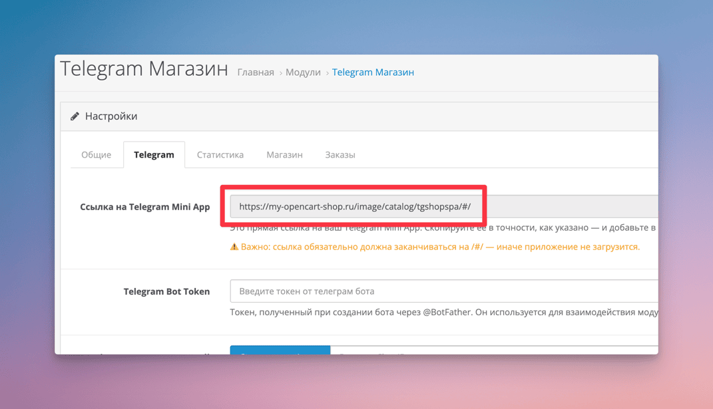

Быстрый старт¶
TeleCart — это модуль, который позволяет развернуть интернет-магазин в Telegram на основе OpenCart. Максимально просто, быстро и без сложных настроек.
На этой странице вы узнаете, как буквально за 10 минут получить готовый интернет-магазин в Telegram.
Системные требования¶
- OpenCart версии 3 или ocStore версии 3
- PHP версии не ниже 7.4
- PHP модули:
- curl
- imagick
- mbstring
- json
- xml
- Архив модуля. Скачать TeleCart на LiveOpencart.
- Доступ к админ-панели OpenCart с правами администратора.
Установка модуля¶
Процесс установки такой же, как у любого другого модуля OpenCart. Вам не нужно вручную менять файлы — достаточно скачать архив и установить его через панель администратора.
- Скачайте модуль на LiveOpencart.
- Войдите в админ-панель OpenCart (
https://ваш-сайт/admin). - Откройте раздел "Расширения -> Установка расширений".
- Загрузите скачанный архив с модулем.
- Перейдите в раздел "Расширения -> Расширения".
- В списке Модули найдите "Telegram Магазин" и нажмите кнопку
[+], чтобы установить его. - Нажмите на иконку карандаша, чтобы открыть настройки модуля.
- В приветственном окне нажмите кнопку "Инициализация".
- После инициализации откроется страница с настройками модуля.
🎇 Установка завершена. Подробную инструкцию со скриншотами и видео смотрите в разделе Установка.
Настройка Telegram¶
Для запуска магазина, потребуется создать Telegram бота и в нём создать Telegram Mini App в котором и будет работать магазин.
Создание Telegram Bot¶
- Откройте телеграм и перейдите в @BotFather.
- Введите команду
/newbotчтобы инициировать создание бота. - Введите название бота, например "Opencart бот для магазина" и нажмите Enter.
- Введите username для бота. Оно должно быть уникальным и заканчиваться на "bot". Например
OpenCartShopBot. - Telegram поздравит с созданием бота, покажет URL по которому открывается чат с ботом (вида https://t.me/OpenCartShopBot) и выдаст токен, который нужно сохранить в надёжном месте. Этот токен потребуется для настройки модуля. Пример токена:
7803290215:AAFVWXbkhG45e8xuQsbBo-mdymn_0RLuJZU.
Создание Telegram Mini App¶
- Ввести в @BotFather команду
/newapp. - Выбрать только что созданного бота с именем
@OpenCartShopBot. - Ввести название приложения, например "Opencart Магазин".
- Ввести короткое описание для приложения, например "Telegram магазин на базе OpenCart".
- Загрузить изображение для приложения. Размер изображения 640x360. Вы можете скачать и подставить эту заглушку. Позже изображение можно поменять.
- Далее он предложит загрузить демо GIF, можно пропустить, введя команду
/empty. - Далее он попросит ввести Web App URL. Ссылка на Telegram Mini App находится на странице настроек TeleCart модуля в админ панели OpenCart (вкладка Telegram). 
- Далее ввести короткое имя для приложения. Оно будет использоваться в ссылке для прямого открытия магазина. Например, shop.
- В ответ Telegram пришлёт сообщение с прямой ссылкой на Telegram-магазин. Пример ссылки: https://t.me/OpenCartShopBot/shop.
{kind=link}
Перейдите по этой ссылке и Вы уже увидите работающий магазин в Telegram!
Минимальная настройка модуля¶
В минимальную настройку модуля входит ввод Telegram Bot Token, который Вы получили в разделе "Создание Telegram Bot", а так же задание Telegram Chat ID, в который будут приходить уведомления о новых заказах администратору магазина.
- Перейти в настройки модуля TeleCart (раздел "Расширения -> Расширения", далее настройки модуля "Telecart").
- В настройках на вкладке "Telegram Bot Token" ввести Telegram Bot Token, который был получен в разделе "Создание Telegram Bot".
- Написать в Telegram чат с ботом (ссылка на бота была получена в разделе "Создание Telegram Bot", вида https://t.me/OpenCartShopBot) кодовое слово
opencart_get_chatid. - Вернуться в настройки модуля и нажать на кнопку "Получить Chat ID". Если всё сделано правильно, в текстовое поле подставится Ваш идентификатор чата с ботом. Пример как выглядит Chat ID:
849193407. - Сохранить настройки модуля.
{kind=link}
На этом настройка интеграции модуля TeleCart с Telegram ботом завершена. При успешном заказе, Вы будете получать уведомления в чат с ботом о новых заказах. Покупатель тоже будет получать уведомления, если разрешит получение уведомлений на своей стороне.
Как открыть Telegram-магазин¶
Открыть магазин можно по ссылке, которую Вы получили при создании Telegram Mini App в разделе "Создание Telegram Mini App.". Пример ссылки: https://t.me/OpenCartShopBot/shop. Т.е. она содержит URL адрес самого бота и преффикс /shop который отдаёт команду открыть сразу Telegram Mini App.
Далее можно более детально настроить бота, добавив кнопку открытия магазина непосредственно в чате и в описании бота. Что очень удобно. Подробнее про детальную настройку бота можно почитать в разделе Настройка Telegram.
Заключение¶
На этом всё — базовая настройка завершена 🎉.
Теперь Ваш Telegram-магазин готов к работе и уже может принимать заказы, даже без дополнительных настроек.
Я искренне желаю вам больших продаж и надеюсь, что модуль TeleCart поможет вашему интернет-магазину 📈, а Вашим покупателям будет проще и удобнее совершать заказы прямо в Telegram.
Обратите внимание, что в модуле и в Вашем Telegram-боте есть ещё много полезных настроек. Все они описаны на страницах текущей документации. Рекомендую их изучить, чтобы получить полноценный, качественный и удобный магазин.
Помощь и поддержку по модулю Вы можете получить:
- Личные сообщения или комментарии на странице товара в LiveOpencart.
- Моя официальная Telegram группа (подписывайтесь, там я публикую информацию о новых версиях модулей, провожу анонсы нового функционала и собираю пожелания на доработки).
- E-mail: mail@nikitakiselev.ru